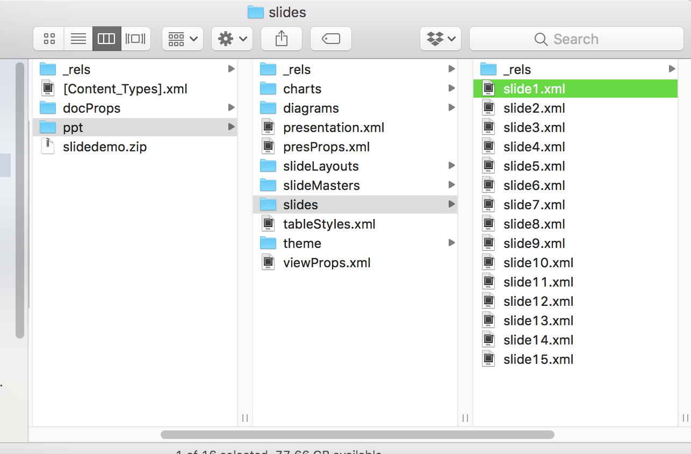
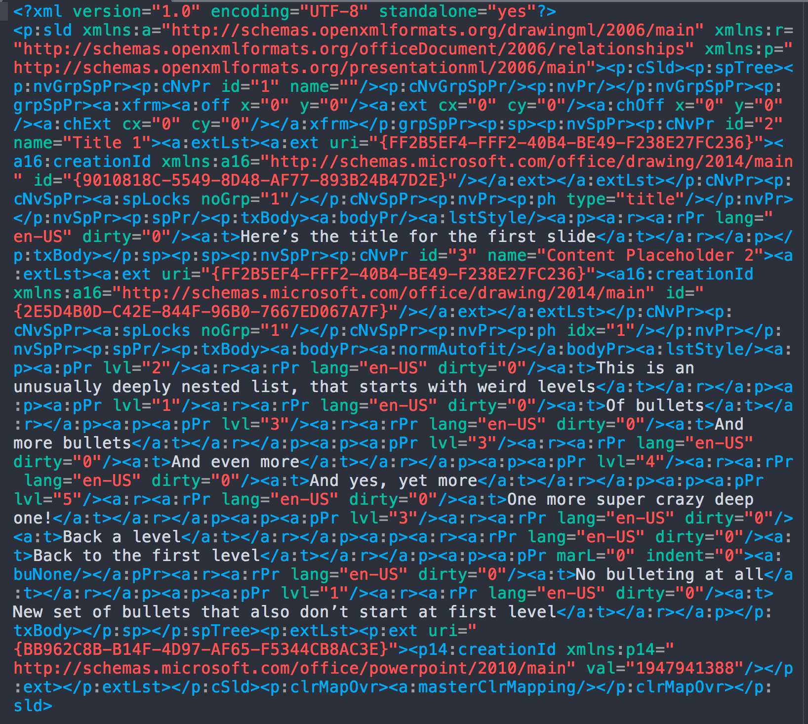

Peeking behind the curtain with {slidex}
Contents
I gave a lightning talk (slides here) this past weekend at the second annual Cascadia R Conference that was focused on creating and contributing new themes to the {xaringan} package, which is essentially a really well thought out and well-organized R Markdown wrapper around the remark.js package for producing beautiful HTML slides. At the end of that talk, I announced the work-in-progress version of my new R package, {slidex}, for converting Microsoft PowerPoint slides to R Markdown, and specifically {xaringan}, with a single function.

The response to this package has been incredible. These are some of my favorite comments from twitter.
This is legit badass! #rstats #blackmagic https://t.co/UAwGS5YWjh
— Indrajeet Patil (@patilindrajeets) June 3, 2018
I love this new package 📦! It worked wonderful for me and I also see it as an excellent teaching and collaboration tool for those who may not be as familiar with #rstats! Thanks @datalorax_ 👏
— Sondra Stegenga (@stegso) June 3, 2018
disbelief
— Jan Stanstrup (@JanStanstrup) June 3, 2018
Amazing!! https://t.co/Tf9Je9tu2M
— Henrique Laureano (@hap_laureano) June 4, 2018
And of course, the one that absolutely took the cake, for me, was this comment by Yihui Xie, who is the author of {xaringan}, as well as many other amazing packages (and if you’re reading this blog, you probably know who he is).

Overall, it’s honestly been a little bit overwhelming, but also so much fun. It’s the first time I’ve built something that has really gotten people excited. I hope to see {slidex} grow over time with input from the community.
Peeking behind the curtain
A common sentiment from a those tweets - as well as the interactions I’ve had offline with others - is the feeling that something magical is happening. So I wanted to use this post to basically show what is happening, and that it’s actually not nearly as complicated as it probably seems.
All Microsoft Files are XML Code
Honestly, I can’t remember how I stumbled across this, but any Microsoft file (.docx, .pptx, etc.) is essentially just a collection of XML files in the background. You can access these files by just zipping/unzipping the file.
On GitHub, you can see all the source code for the package. In the utils.R file you’ll see all the internals for the package. Notice the second function in the file is called extract_xml. The key parts of this function are
ppt <- basename(path)
xml_folder <- paste0(gsub("\\.pptx| ", "", ppt), "_xml")
dir.create(xml_folder, showWarnings = FALSE)
file.copy(path, file.path(xml_folder, ppt))
file.rename(file.path(xml_folder, ppt),
gsub("\\.pptx", "\\.zip", file.path(xml_folder, ppt)))
unzip(gsub("\\.pptx", "\\.zip", file.path(xml_folder, ppt)),
exdir = xml_folder)
The basename function peels off the the name of the PPTX from the file path. The next two lines create a new folder in the directory (which gets removed later) that is the name of the PPTX with _xml appended. The PPTX is then copied to that folder and the extension is changed from ".pptx" to ".zip". Finally, The last line unzips the file and… voila! We have all the XML code.

What do we do with the xml code?
The good news is, we now have literally everything that was used to produce the original slides. If you go into the ppt folder, you’ll see there’s a folder called “media”. This is where all the images are, and {slidex} just moves them into an assets folder in the main directory and renames the folder “img”.
Inside the “ppt” folder is another folder called “slides”. In this folder is one xml file for each slide.

Just looking at these, they are almost entirely incomprehensible. For example, here’s a screenshot of the xml code for the second slide (the first non-title slide).

This can be so much more readable by simply reading it into R, using the xml2 package, and then immediately writing it back out.
library(xml2)
xml <- read_xml("slide2.xml")
write_xml(xml, "slide2.xml")
This does all the linting for the file and makes it look like this

Note that this is just a small portion of the xml because it is now far too long to fit into a single screenshot, but you can see the structure of the xml tree far more clearly. That doesn’t mean it’s completely obvious where things live, but at least it’s no longer completely incomprehensible either. For example, in the above, the text “Here’s the title for the first slide” lives in //p:txBody/a:p/a:r/a:t. From there, it’s just a lot of data wrangling to try to figure out how to parse things correctly.
Although not shown in the screenshot above, a lot of information also lives in the attributes. That’s how {slidex} pulls the bullet levels, for example.
What’s next for slidex
The next big step for slidex is to get it on CRAN. There are a few simple features I’d like to add in before submitting, but given the amount of interest there has been, and the relative scarcity (knock on wood) of complaints that the package isn’t working, I think version 0.1 can ship to CRAN soon.
What are the simple extension? They’re all listed in the README on the GitHub page, but I’ll repeat them here.
First, I’d like slidex to pull notes from slides. This should be pretty straightforward. I’m thinking I’ll have the notes be written out in their own file, but also probably embed them within the slides themselves, given that {xaringan} supports notes.
Second, in many of my trials converting PPTX files I ran into files with ".emf" extensions. Honestly, I’m not sure where these come from, but I know they’re a proprietary Microsoft format. These can be converted to ".png" files using libreoffice, so I’d like to build in a function that checks if libreoffice is installed, asks the user to install it if not, and then converts the files to pngs. Similarly, I’d like to use libreoffice to convert ".ppt" files to ".pptx" files so any Microsoft PowerPoint can be converted, rather than just those with the “x” on their extension (which stands for xml).
Third, and finally, I’d like slides with a two-panel layout to maintain that layout. This one I initially thought would be pretty straightforward but the more I think about it the less convinced of that I am. So it may have to wait until version 0.2.
Long-term, I’d really like to have {slidex} reproduce any plots in the slide. I’ve experimented with this and have found a few different ways of extracting the data from the charts, but it’s still not entirely straightforward. I think it’s doable, but probably not for version 0.1.
Feedback and collaboration welcome
Have you used {slidex}? I’d love any feedback you have. Similarly, if you think slidex is a neat tool and want to contribute to it, I’d love your help!
Author Daniel Anderson
LastMod 2018-06-08